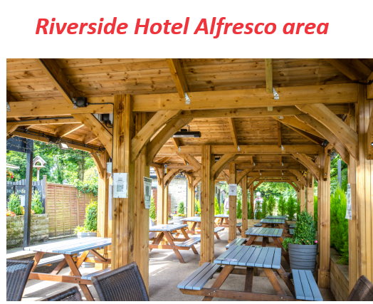

Route 65. Covers band based in Ilkley, Yorkshire. UK. Last update 22nd May 2024
(STOP PRESS 9AM Wed 22nd May). Today's gig at the Riverside is CANCELLED because of the weather. We are really sorry!
We are a band of fun loving folk who came together through a love of music - especially sing along, foot tapping sixties stuff when music was real music!
We met through the University of the Third Age (U3A) and had so much in common we decided to form a band. Route 65 has been going for around 6 years now though we had a bit of an extended enforced break recently
We all live in or around the A65 Ilkley/Menston area of Yorkshire, the inspiration for the band name.
If we ever forget where we live, (Good evening officer!) - the band name serves the dual purpose of helping the emergency services get us home - should that ever be needed.

About Us

We are a seven piece semi-acoustic band that plays at gigs ranging from community care homes to pub gardens, large outdoor fetes and just about everything in between.
We have keyboards, guitars bass and percussion and four vocalists allowing the use of multipart vocal harmonies.
We use two different amplification setups depending on the size of event: A small busker amplifier arrangement for the smaller events and a full public address rig for larger spaces and outdoor events.
Our main aims are for the audience (and ourselves) to have fun dancing or singing along on a trip down memory lane. Along the way we raise money for charity.
Charges: We aim to support charities so don't charge as such - giving 95% of whatever income we have to three main charities. We do accept bribes of tea and cake or occasionally a beer however. For non charity events such as private parties we suggest a minimum donation which we distribute to our preferred charities. We can talk this through if you are looking to book the band.
Travel: We normally play venues within a 20 mile or so distance of Ilkley. This is relatively relaxed so chat with us and we'll see if we can help.
The Music
The original artists we cover include:
Beatles, Kinks, Rolling Stones, Searchers, Simon and Garfunkel, Tina Turner, Mamas and the Papas, Martha and the Vandellas, Manfred Mann, Travelling Wilburys, Honeycombs, Dusty Springfield, The Monkees, Queen and many more!
Special requests:
If we have enough notice we can add in songs not currently in our repertoire. We have also been known to rewrite lyrics of a song to suit special occasions. Chat to us if you think that may be a good idea.
A special request may include one of guests performing a song or two with our help. This can be a lot of fun but does need a bit of planning.
A typical setlist:
Set 1 50 minutes - a bit quieter
Sweets for my sweet-Searchers;
Can't buy me love - Beatles;
I want to hold your hand - Beatles;
I_m a believer Neil Diamond/The Monkees 1967;
California Dreamin Mamas and the Papas;
Sound of Silence Simon and Garfunkel;
Will you still love me tomorrow Shirelles;
I only want to be with you Dusty SpringField;
Bus Stop - Hollies;
Hard Days Night - Beatles;
Nowhere Man - Beatles ,Lennon and Mcartney;
Ruby Tuesday - The Rolling Stones;
Sunny Afternoon - Kinks;
When You Walk In The Room - Jackie DeShannon;
When I'm 64 - Beatles;
Last Train to Clarksville - The Monkees;
Wild Thing - The Troggs;
Set 2 60 minutes - a lot noisier - mostly
Old Time Rock and Roll - Bob Seger (Special request!) ;
Hoochie Coochie man - Eric Clapton (Special request!);
Can't get enough of your love - Bad company;
Make Me Smile - Steve Harley & Cockney rebel. c 1975;
Mrs Robinson - Simon and Garfunkel;
We gotta get out of this place - The Animals;
Happy Together - The Turtles;
I'm into something good - Hermans Hermits;
Layla - Eric Clapton;
Pretty Woman - Roy Orbison ;
Sweet Caroline - Neil Diamond;
Around and around - Stones;
That'll be the day - Buddy Holly 1957;
Rock and Roll Music - Chuck Berry;
Shake Rattle and Roll - Bill Haley and the Comets;
Be Bop a lula - Gene Vincent ;
Blue Suede Shoes - Carl Perkins;
River deep Mountain high - Tina Turner;
Whole lotta shaking goin on - Jerry Lee Lewis;
The next few public gigs (updated 9AM 22nd May 2024)
We have loads of new material polished and ready to go and looking forward to loads of gigs throughout the year.
There may be some appearances marked as provisional in the list below. We are juggling calendars and family holidays and hope to firm up these dates in the near future. We do try to keep the Riverside dates on the 1st and 3rd wednesdays but sometimes this doesn't work out. Please keep an eye on this list.
Wed 22nd May 1PM - 3PM ish. Riverside Pub Alfresco area. (9AM Wed 22nd May). CANCELLED because of the weather. We are really sorry
Wed 19th June 1PM - 3PM ish. Riverside Pub Alfresco area.
Sat 29th June Time TBA. Addingham Village Fete. PROVISIONAL booking
Sun 30th June Time TBA. Nell Bank Outdoor centre. White Rose Classic bike ride

A lot of the public gigs are outdoors so please check before travelling just in case we are rained off! If something is cancelled because of weather or any other reason we will try and update the calendar on the upcoming gigs page (or message us and ask.)